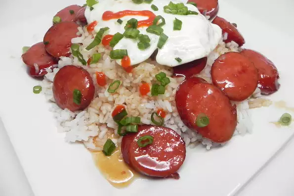

Lazy Longanisa (Filipino-Style Breakfast Sausage)

Description
Mimic a popular Filipino breakfast dish by marinating fully cooked smoked sausage (like andouille or kielbasa) in a blend of sugar and soy sauce. The sausage is caramelized and best served with white rice and a fried egg.
Ingredients
- 1 pound smoked kielbasa sausage, cut into thick slices
- ½ cup brown sugar
- 4 teaspoons white vinegar
- 1 tablespoon soy sauce
- ½ cup water
- 1 tablespoon vegetable oil
Directions
- Combine sliced sausage, brown sugar, white vinegar, and soy sauce in a large plastic bag. Seal and marinate in the refrigerate, 2 hours to overnight.
- Pour sausage mixture into a large skillet over medium-high heat. Add water and vegetable oil; cook and stir until liquid is reduced and sausage is browned, about 15 minutes.
Back to Main